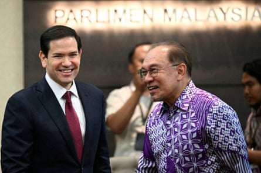
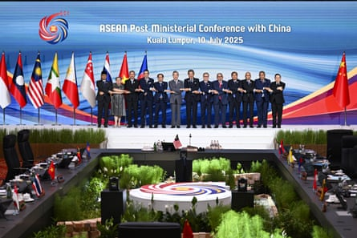

Even as they face among the most punitive tariffs globally, US secretary of state Marco Rubio has sought to reassure southeast Asian nations of Washington’s commitment to the region, saying countries there may get “better” trade deals than the rest of the world.
In his first official visit to Asia, Rubio met foreign ministers of the 10-member Association of Southeast Asian Nations (Asean) in Malaysia on Thursday, telling his counterparts the US has “no intention of abandoning” the region. His visit came days after president Donald Trump renewed his threat to impose severe tariffs across many southeast Asian countries if they did not strike deals by 1 August.
The region, which includes countries that rely on exports and manufacturing, has been among the worst hit by Trump’s trade war.
Thailand, Malaysia, Laos, Myanmar, Cambodia, the Philippines and Indonesia were sent letters this week warning they will face tariffs ranging from 20-40% – levies that Rubio said were being discussed with Asean countries.
“I would say that when all is said and done, many of the countries in Southeast Asia are going to have tariff rates that are actually better than countries in other parts of the world,” Rubio said.
Marco Rubio meets with Malaysia’s prime minister Anwar Ibrahim.Photograph: Mandel Ngan/Reuters
Prior to Rubio’s arrival in Kuala Lumpur, Malaysian prime minister Anwar Ibrahim condemned the tariffs, saying the trade war was not a “passing storm” but instead “the new weather of our time”.
Tools once used to generate growth were now being “wielded to pressure, isolate and contain”, he said.
The looming tariffs have cast a shadow over Rubio’s trip, even as he sought to underline the importance of southeast Asia to Washington.
“It is our view, our strong view, and the reality that this century and the next, the story of the next 50 years, will largely be written here in this region, in this part of the world,” he said.
Stephen Olson, visiting senior fellow at ISEAS – Yusof Ishak Institute in Singapore, said Rubio had “the unenviable position of trying to reassure southeast Asian partners that [the] US continues to be committed to the region and to free and open trade relations when all the evidence points in the opposite direction.”
“Asean ministers will give him a polite and respectful reception but are unlikely to be fundamentally persuaded by anything he says,” added Olson.
Questions over Washington’s commitment to the region coupled with Trump’s unpredictable economic polices could be a boon for China.
At the same meeting China and Asean, which is China’s largest trading partner, completed negotiations to further refine their free trade area to include additional industries.
Representatives attending the Asean foreign ministers meeting.Photograph: Xinhua/Shutterstock
And in veiled comments, Chinese foreign minister Wang Yi appeared to draw a contrast between Washington and Beijing – presenting China as a reliable partner interested in mutual development.
Without naming the US directly, he criticised Trump’s tariffs, highlighting “unilateral protectionism and the abuse of tariffs by a certain major country”.
In another sign of the economic recalibration, Japanese prime minister Shigeru Ishiba told a television news programme that Japan needed to wean itself from US dependence in key areas.
“If they think Japan ought to follow what America says as we depend heavily on them, then we need to work to become more self-sufficient in security, energy and food, and less dependent on America,” he said .
Vietnam is the only Asian country, and the second globally, to reach a trade deal with the US. Under the agreement many goods will face a tariff of 20% but a 40% levy will remain for so-called transshipments – a provision that is aimed at Chinese companies accused of passing their products through Vietnam to avoid tariffs.
Trump’s agreement with Vietnam is seen by analysts as a sign he will use tariff negotiations to try to pressure countries to cut China from their supply chains.
Southeast Asian nations have rushed to offer concessions to Trump to avert the tariffs, which could devastate economic growth.
Levies loom over eight out of 10 Asean nations, including a tariff of 20% on the Philippines, 25% on Malaysia and Brunei, 32% on Indonesia , and 36% on Cambodia and Thailand. Laos and Myanmar, a country gripped by civil war, continue to face among the most severe tariffs globally, with a 40% levy.
In Thailand , if the government is unable to avert the 36% rate, GDP growth is expected to drop below 1% this year, according to analysis by the Eurasia Group, a political risk consultancy.
Bangkok has pledged to reduce its $46bn trade surplus with the US by 70% within five years and eliminate the imbalance within eight years.
Officials in Indonesia, Southeast Asia’s largest economy, were also reportedly shocked by the letters sent by the US, which came despite a recent pledge to increase imports from the US by $34bn.
With agencies